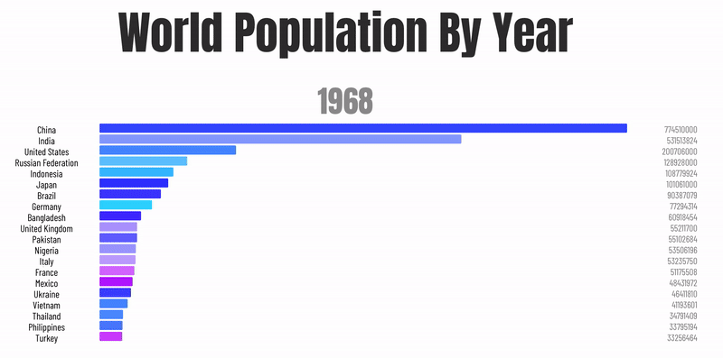
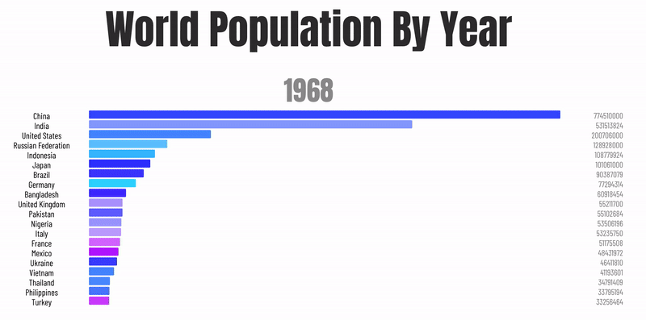
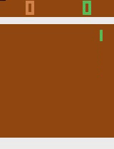
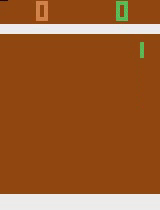

Brian Chao
I am a junior EECS student at National Taiwan University. My interests span general software development (especially open source software), machine learning, image processing, and math. In my free time, I maintain several fun projects on Github.

Backgrounds and Experience
Hover on the logos to see more information.


B.S. in Electrical Engineering
2017/9~Present
- GPA : 4.24 / 4.3. Major GPA : 4.26 / 4.3
- I am a 3rd year Electrical Engineering student at NTU. In 2019 Fall, I applied for double major in Computer Science.
- I am also a Student Ambassador at NTU, under the Office of International Affairs.
- TA Experience
- Machine Learning (2020 Spring)
- Signals and Systems (2020 Spring)
- Dean's List Awards * 4
- See my selected courses here.
Quantitative Finance Research Intern
2019/1~2019/2
- Designed high-performance trading algorithms (alphas) using price-volume, fundamental, and news data.
- Won the best price-volume alpha award (awarded to the intern who designed the most creative and rewarding alpha based on price-volume data).
Undergraduate Researcher
2018/7~Present
My Research interests include unsupervised representation learning, self-supervised learning, and Generative Adversarial Networks (GAN) applications.
- Image Rectification
- First-authored paper accepted for ICASSP 2020.
- Designed an unsupervised framework with Generative Adversarial Networks backbone to predict image flow maps for fisheye image rectification that greatly outperforms current unpaired image translation methods
Director of Information Department
2019/8~2020/6
Personal Projects
I create open-source projects in my free time. I write mostly Python and Javascript. As for 2020 July 1st, I have acquired over 3500 stars and 100+ followers on Github. Have a quick glance at some of my work!
bullet
Interactive prompts made simple. Build a prompt like stacking blocks.
- 2800+ stars, Github Trending Repository
- 61000+ downloads, 80+ forks since its creation.
- An open-source Python interactive prompts library for developing fully-customizable user-friendly command-line interfaces.
- Leveraged extensive curses programming to create modules that support single/multiple choice, scroll bar, passwords, and numerous styled prompts that can be easily plugged in an existing project.
- Selected by MentorCruise The most exciting upcoming Python Libraries of 2019. Featured on March 2019 Python Bytes online Podcast.
chart-race-react
Seamless bar chart race component for React.
- 330+ stars, 40+ forks on Github.
- A React Components npm package that allows web developers to create beautiful and fully-customizable bar chart races animations for data visualization.
- Built with React, babel, and webpack.
 
Star

Star
Anime Generation
Generating anime with generative adversarial networks.
- Implemented two kinds of Generative Adversarial Networks (GANs): Auxiliary Classifier GANs and Conditional GANs to generate realistic anime characters.
- Users can manipulate the hair and eye colors of generated characters simply by modifying certain dimensions of network input.
- Used multiprocessing to scrape large amounts of high-quality training images from e-commerce websites, making the model one of the best on Github quality-wise. (The dataset I gathered also received 180+ stars on Github, and was used by courses at NTUEE, and featured in multiple Kaggle competitions).
Anime Face Dataset
Self curated dataset of high-quality anime faces.
vocab
A lightweight online dictionary integration to the command line.
Reinforcement Learning Atari
Playing Classic Atari games with RL.
 

Image Rectification
Fisheye image rectification with deep learning.
We propose a novel GAN-based method to rectify fish-eye images by predicting distorted flow maps. Under an unpaired setting, our model were able to out perform naive unpaired image translation methods to create better quality rectified images.